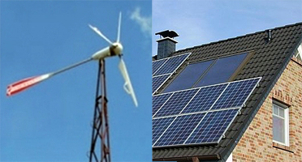
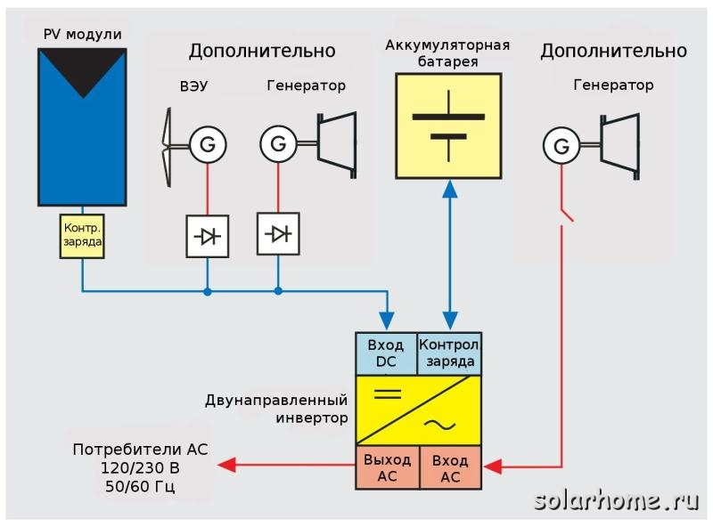
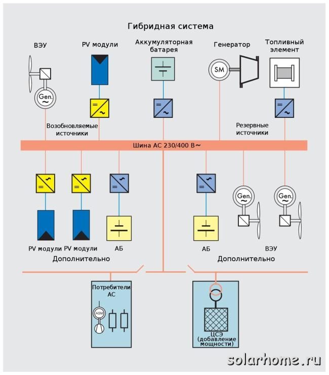
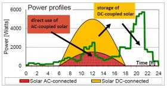
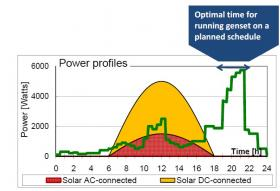

О методах построения гибридных систем электроснабжения

Назад | Постоянный адрес этой страницы: http://www.solarhome.ru/autonom/system_coupling.htm
Методы построения гибридных автономных и резервных систем электроснабженияНа настоящее время доказано, что гибридные системы электроснабжения с использованием возобновляемых источников энергии являются экономически обоснованным решением проблемы электрификации в сельской местности и в других районах, где сеть централизованного электроснабжения удалена, ненадежна или ее прокладка дорога.
В большинстве случаев при построении систем используется конфигурация с соединением различных источников энергии на стороне постоянного тока. Однако в последнее время, после появления надежных и относительно дешевых моделей сетевых инверторов, все больше применяется соединение различных источников энергии на стороне переменного тока. Это обеспечивает не только большую гибкость, но и высокую эффективность использования энергии различных источников за счет уменьшения потерь в системе. Более подробно различные варианты описаны ниже. Также, дополнительная информация есть в статье "Распределенная генерация энергии с использованием ВИЭ", опубликованная в журнале EnergyFresh №1 в 2010 году.
1. Соединение элементов энергосистемы на стороне постоянного токаЭто наиболее распространенный и известный способ. Общая схема приведена на рисунке.

Соединение солнечных батарей и ветроустановки на стороне постоянного тока
Здесь солнечные батареи через контроллер заряда (PWM или MPPT) заряжает аккумуляторные батареи. Одновременно аккумуляторные батареи могут заряжаться от сети. Далее постоянный ток от солнечных батарей и аккумуляторов преобразуется в инверторе в переменный ток напряжением 220В (или 380В, если вам нужна трехфазная система). Этим током питается нагрузка.
К недостатками системы можно отнести
- несколько ступеней преобразования солнечной энергии (контроллер, заряд-разряд аккумуляторов, инвертор) на стороне низкого напряжения постоянного тока.
- необходимость довольно сложной организации системы, если нужно дать приоритет для солнечных батарей относительно сети централизованного электроснабжения. А такой приоритет весьма желателен, так как без этого дорогие солнечные батареи будут работать вхолостую, если у вас есть напряжение в сети.
Для того, чтобы в первую очередь использовать энергию от солнечных батарей, нужно поставить в систему или ББП, который может отключаться от входа переменного тока (от сети) при напряжении на аккумуляторах выше заданного значения (например, ББП Steca Xtender), или включить в систему отдельное такое устройство. Нужно отметить, что функции этого устройства не так уж и просты. Чтобы делать то же самое, что делает ББП Xtender, это устройство должно:
- следить за напряжением на аккумуляторных батареях, включать сеть, если напряжение понизилось ниже заданного в течение определенного промежутка времени
- после включения сети по низкому напряжению на аккумуляторной батарее обеспечить полный зарядный цикл аккумуляторов (как минимум фазы заряда максимальным током и насыщения)
- отключить сеть после окончания этих фаз заряда если напряжение на аккумуляторах поднялось выше заданного
- делать это в зависимости от времени суток, т.к. нет смысла отключать сеть после зарядного цикла ночью - все равно ночью заряда от солнечных батарей нет.
- иметь контактор на максимальный ток, который может быть в системе. Такой контактор не только недешев, но и потребляет от сети заметный ток.
Стоимость такого устройства будет скорее всего больше, чем разница между стоимостью инвертора Steca Xtender и более дешевыми инверторами (например, Xantrex или Outback). В случае применения инверторов Xtender XTM решение на оборудовании Xtender будет намного дешевле.
2. Соединение элементов системы на стороне переменного тока
Соединение элементов системы на стороне переменного тока
Соединение элементов системы на стороне переменного тока обладает наибольшей гибкостью и возможностью изменения и наращивания системы в дальнейшем. См. статью в журнале EnergyFresh (ссылка выше) .
Основные требования к элементам системы.
- Батарейный инвертор должен быть двунаправленным, т.е. иметь возможность принимать энергию с выхода переменного тока.
- Этот инвертор должен иметь способность контролировать работу сетевого инвертора. Продвинутые инверторы могут изменять частоту выходного напряжения. Если такой возможности нет, то в инверторе должны быть дополнительные контакты, которые управляются напряжением на АБ; эти контакты могут быть использованы для включения-выключения сетевого инвертора.
- Мощность батарейного инвертора должны быть равна или больше суммарной мощности сетевых инверторов, подключенных к его выходу. При отсутствии сети и нагрузки, вся вырабатываемая энергия от сетевых инверторов направляется на заряд АБ
- Стандартный тест сети, который обычно выполняет сетевой инвертор, должны быть более "умным", чем использовавшееся ранее измерение импеданса сети. Иначе есть риск такой ситуации, когда сетевой инвертор будет постоянно включаться- выключаться. Еще лучше, если у сетевого инвертора предусмотрен режим "off-grid".
- Оптимальным по эффективности будет совместное применение сетевых инверторов и контроллеров заряда постоянного тока. Распределение по мощности зависит от профиля потребления энергии нагрузкой. Это также добавит надежности в работе системы (см. ниже)
Возможность использования стандартных сетевых инверторов для солнечных батарей или ветроустановок в автономных системах может облегчить дизайн системы. Становится возможным располагать солнечные батареи далеко от аккумуляторных батарей, более того - можно объединять в одну систему несколько солнечных батарей, расположенных на разных зданиях.
Большим преимуществом является возможность соединять различные компоненты системы по обычной сети 220В переменного тока. Известно, что кабели постоянного тока должны быть толстыми и короткими, т.к. обычно используется напряжение 12/24/48В. Это является большим ограничением при создании системы, если расстояния между солнечными батареями, ветроустановкой и аккумуляторами значительные.
Таким образом, основные преимущества системы с соединением по шине переменного тока:
- Низкая цена и доступность массово производимых сетевых инверторов
- Возможны большие расстояния между элементами системы
- При потреблении энергии в дневное время - очень высокая эффективность системы.
Соединение элементов системы по переменного тока становится все более популярным. Однако, нельзя сказать что это однозначно лучшее решение. К недостаткам можно отнести следующее:
- Возможно меньшая эффективность если нужно сначала сохранить энергию в аккумуляторах (см. расчеты ниже)
- Установки оборудования в разных местах иногда представляет неудобства - но это также может быть и преимуществом (см. выше замечания по высокому напряжению)
- Цена сетевого инвертора выше, чем цена MPPT контроллера. Современные MPPT контроллеры позволяют использовать более дешевые "сетевые" фотоэлектрические модули в автономных системах
- Зависимость работы сетевого инвертора от работы батарейного инвертора.
Стандартные конфигурации гибридных систем с несколькими источниками энергии используют соединение на шине постоянного тока, на шине переменного тока, или и то, и другое. Искусство проектировщика заключается в правильном выборе элементов системы и основной схемы соединений.
По эффективности использования энергии соединения по постоянному и переменному току отличаются. Необходимо придерживаться следующих простых правил:
- Если основное потребление имеет место в темное время суток, то энергия должна храниться в аккумуляторных батареях. В этом случае соединение по постоянному току будет более оправданно.
- Если бОльшая часть энергии потребляется днем, т.е. когда и солнечные батареи вырабатывают электричество, то лучше применять соединения по переменному току, т.к. в этом случае будет на одно преобразование энергии меньше

Распределение потребления энергии, вырабатываемой солнечной батареей
При сравнении примем следующие допущения:
- КПД сетевого инвертора: 0,93-0,98
- КПД батарейного инвертора в режиме инвертирования: 0,85-0,94
- КПД батарейного инвертора в режиме заряда АБ: 0,9-0,95
- КПД контроллера заряда: 0,95
- КПД заряда-разряда АБ: 0,8
Если энергия, произведенная сетевым инвертором будет использоваться в ночное время, то общий КПД преобразований будет равен 0,96*0,9*0,9*0,8=0,662
Если энергия, произведенная сетевым инвертором будет использоваться в дневное время, то общий КПД преобразований будет равен 0,96
Если энергия, произведенная солнечными батареями передается через контроллер заряда и будет использоваться в ночное время, то общий КПД преобразований будет равен 0,95*0,9*0,8=0,68
Если энергия, произведенная солнечными батареями передается через контроллер заряда и будет использоваться в дневное время, то общий КПД преобразований будет равен 0,95*0,9=0,855
Таким образом, при основном потреблении днем при использовании сетевых инверторов можно дополнительно получить на 10% больше энергии, чем при использовании контроллеров заряда постоянного тока. Если энергия потребляется только в темное время суток, то при использовании сетевых инверторов будет теряться около 1,5-2% энергии по сравнению со схемой "обвязки" по постоянному току. Это все верно только если используется хороший MPPT контроллер заряда постоянного тока. Обычные ШИМ контроллеры не позволяют максимально использовать энергию солнечных батарей и имеют эффективность в среднем на 15% ниже - за счет неоптимального сочетания напряжения на АБ и в точке максимальной мощности солнечной батареи. Таким образом, если сравнивать схемы с сетевыми инверторами и с ШИМ контроллерами, первые всегда будут на 13-26% более эффективны, чем вторые.
Дополнительный плюс - при использовании сетевых инверторов обычно используется высокое напряжение (200-600В), а контроллеры для АБ работают максимум до 150В (обычно в 48В системе рабочее напряжение модулей около 70-100В). Вследствие этого можно сэкономить дополнительно на проводах от солнечных батарей, т.к. при меньших токах нужны меньшие сечения провода. Медь сейчас очень недешева. На уменьшении потерь в проводах можно сэкономить еще несколько процентов энергии.
Эффективность использования энергии от солнечных батарей
| КПД системы при использовании | |||||
| солнечного контроллера заряда АБ | сетевого ФЭ инвертора | ||||
| Основное время потребления энергии | |||||
| днем | в темное время суток | днем | в темное время суток | ||
| MPPT | PWM | MPPT | PWM | ||
| 85,5% | 70% | 68% | 53% | 96% | 66,2% |
Конечно, самым лучшим вариантом будет использование гибридной системы с обвязкой как по переменному, так и постоянному току. Однако, на практике, вряд ли имеет смысл вводить и сетевой инвертор, и контроллер заряда только лишь для того, чтобы повысить выработку системы на несколько процентов.
Гибридная "обвязка" имеет смысл для повышения надежности системы. Учитывая, что эффективность применения сетевых инверторов выше, основная часть солнечной батареи должна работать через сетевой инвертор. Однако, сетевой инвертор имеет один важных недостаток - если нет опорного напряжения в сети, он не работает. Поэтому батарейный инвертор должен работать всегда. Но что если после нескольких пасмурных дней и отсутствия сети аккумуляторы разрядились и инвертор выключился для того, чтобы защитить аккумуляторы от глубокого разряда? Автоматически система с обвязкой только по переменному току не запустится. Конечно, можно, когда появится солнце, отключить нагрузку и вручную включить инвертор (многие инверторы имеют функцию принудительного старта даже при разряженных АБ), чтобы дать сетевым инверторам подзарядить аккумуляторы. Но лучше иметь часть солнечных батарей, которые работают через контроллер постоянного тока и заряжают аккумуляторные батареи. В этом случае, когда АБ зарядятся от контроллера заряда, инвертор автоматически включится и запустит остальную часть системы - сетевые инверторы и нагрузку.
Поэтому мы рекомендуем иметь гибридную обвязку, если у вас полностью автономная система электроснабжения, или сеть пропадает на длительное (несколько дней и больше) время. Подразумевается, что резервного генератора нет, потому что если он есть, можно смело остановиться на "обвязке" по переменному току.
Рассмотрим случаи с использованием генератора.

Оптимальное время для работы резервного генератора
Различные генераторы имеют различную точность поддержания частоты. Обычно, частота генератора выше при отсутствии нагрузки, и падает при перегрузках. Влияние сетевого инвертора, подключенного к выходу генератора, на его частоту трудно предсказать - оно будет отличаться для разных генераторов.
В случае сомнений, лучше установить реле, которое будет отключать сетевой инвертор от системы, когда запущен генератор. Генератор будет питать нагрузку и заряжать аккумуляторы. Это легко сделать путем программирования дополнительных управляющих контактов инверторов (Xtender, SMA).
Алгоритм работы гибридной системы с резервным генератором обычно предусматривает периодическую работу генератора. Это может быть сделано 2 способами:
- генератор используется от случая к случаю и запускается при понижении напряжения на АБ
- генератор запускается ежедневно. В этом случае лучше запланировать время работы генератора, а запуск при понижении напряжения на АБ использовать только при необходимости.
Лучшее время для планового запуска генератора - когда нет солнца и нагрузка максимальна. Обычно это вечерние часы (см. график выше). Лучше для питания пика нагрузки запускать генератор, чем сначала использовать энергию, запасенную в аккумуляторах, а потом заряжать их от того же генератора. При правильном планировании работы генератора, можно исключить ненужное циклирование аккумуляторов, повысить эффективность работы системы и продлить срок службы АБ.